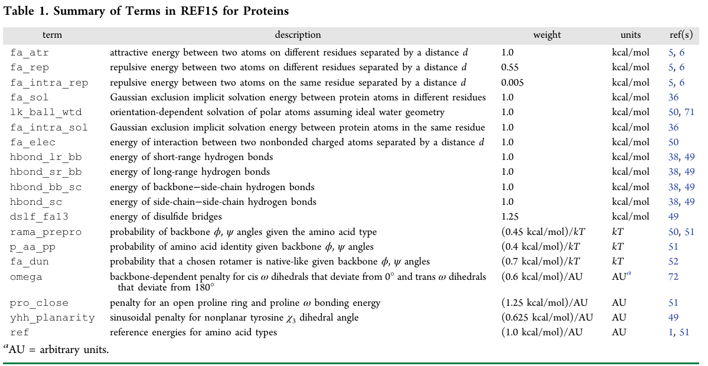

Bold text means that these files and/or this information is provided.
Italicized text means that this material will NOT be conducted during the workshop
fixed width text means you should type the command into your terminal
If you want to try making files that already exist (e.g., input files), write them to a different directory! (mkdir my_files)
This tutorial assumes that you have Rosetta added to your PATH variable. If you do not already have this done, add the rosetta applications to your path. For the Meilerlab workshop (tcsh shell), do this:
setenv PATH ${PATH}:${HOME}/rosetta_workshop/rosetta/main/source/bin
setenv PATH ${PATH}:${HOME}/rosetta_workshop/rosetta/main/source/tools
setenv PATH ${PATH}:${HOME}/rosetta_workshop/rosetta/tools/protein_tools/scripts
alternatively, for bash shell users:
export PATH=${HOME}/rosetta_workshop/rosetta/main/source/bin:$PATH
export PATH=${HOME}/rosetta_workshop/rosetta/main/source/tools:$PATH
export PATH=${HOME}/rosetta_workshop/rosetta/tools/protein_scripts/tools:$PATH
Rosetta is assumed to be installed at ${HOME}/rosetta_workshop/rosetta
This tutorial is an example of an antibody multistate design experiment. This builds off of the previous tutorial, antibody single-state design. In that tutorial we designed an antibody (CH67) against a single antigen (influenza hemagglutinin H1 SolomonIslands/03/2006). This type of design is known as single-state design, since we were designing a single antibody-antigen complex. This tutorial will explore multistate design, where we are designing multiple complexes (also known as states) simultaneously. We will design CH67 to retain binding for H1 SolomonIslands/03/2006 while also designing it to bind the pandemic strain H1 California/07/2009, which is not bound by CH67. In this case we will design two states - CH67 complexed with H1 SolomonIslands/03/2006, and CH67 complexed with to H1 California/07/2009.
Change your current directory to multistate_design, and there create a directory called my_files and switch to that directory. Although many files you need for the tutorial are located in the input_files directory, we will work from my_files for the rest of the tutorial.
cd ~/rosetta_workshop/tutorials/protein_design/multistate_design
mkdir my_files
cd my_files
Prepare the input complexes for design.
We will use the 4HKX complex from the previous tutorial.
cp ../input_files/4HKX_renum.pdb .
We also need to download the structure of the H1 California/07/2009, PDB ID 3ubq. The 3UBQ.pdb file is provided in the input_files directory. However the instructions for downloading this PDB file are also provided below.
Prepare the PDBs for running through Rosetta. In general before running a PDB through Rosetta you should remove water molecules and all ligands that are non-essential to your protocol. We will use an automated script to do this processing.
We want to pull the HA1 domain of hemagglutinin (chain A) from the PDB 3UBQ.
clean_pdb.py 3UBQ A
The HA structure of H1 SolomonIslands/03/2006 in the 4HKX complex is truncated to the globular head domain of HA. Since the structure in H1 California/07/2009 includes the full HA we will truncate it to match the 4HKX complex. Also, because the H1 California/07/2009 strain is not bound by CH67 we have to create a mock complex based on the 4HKX structure. We will manually align these PDB files in PyMOL to create a model of CH67 bound to H1 California/07/2009. Enter the following commands in the PyMOL command prompt to align the two structures, truncate the H1 California/07/2009 antigen and create a mock complex with CH67.
pymol 3UBQ_A.pdb 4HKX_renum.pdb
Click the 'S' button on the bottom right to show the sequences.
Align 3UBQ to the HA chain in 4HKX. Click the 'A' button next to 4HKX_renum on the right side of the screen, click 'align', 'to molecule', '3UBQ_A'.
From the sequence alignment we can determine where the sequence should be truncated. Enter the following command to remove these leading and trailing amino acids.
select truncation, 3UBQ_A and (resi 1-47 or resi 261-323)
remove truncation
Save the HA from the 3UBQ structure with the antibody from 4HKX - this will make up our mock complex that we will later design.
save 3UBQ_Ab.pdb, 3UBQ_A or ( 4HKX_renum and chain H+L )
Rename and reorder the chains in the CH67-3UBQ complex to the same convention as in the CH67-4HKX complex.
python2 ../../scripts/reorder_pdb_chains.py --new_chain_order H,L,A \
--new_chain_ids H,L,A --norestart 3UBQ_Ab.pdb 3UBQ_Ab_renum.pdb
Prepare a residue file (resfile) for multistate design.
Resfiles in multistate design function exactly as in single-state design. The resfile format is described in more detail in the single-state design tutorial. The main difference is that you should create a resfile for each state, since each state can designate different residues for repacking.
In this tutorial, we will use script define_interface.py to define which residues are at the antibody-antigen interface. Interface residues on the antibody will be redesigned, and those on the antigen side will be repacked. This algorithm defines interface residues as those with a heavy atom within 5 A of a heavy atom on a residue on the opposing side of the interface.
Run define_interface.py to generate a resfile with designable and repackable residues.
python2 ../../scripts/define_interface.py \
--side1 HL --side2 A --design-side 1 \
--repack --output 4HKX 4HKX_renum.pdb
python2 ../../scripts/define_interface.py \
--side1 HL --side2 A --design-side 1 \
--repack --output 3UBQ 3UBQ_Ab_renum.pdb
Open the two resfiles in gedit to make sure both resfiles have the same number of designable residues.
gedit 4HKX.resfile 3UBQ.resfile &
Notice that residues for chains H and L are identical between the two resfiles, but not for chain A. For RECON MSD, the residue numbers do not have to be identical, but the designed positions should be matched between all design states, so that there are an equal number of positions considered for design. RECON MSD sampling relies on the sequence order to correctly restrain sampling across states for each design position. For general use of the RECON MSD mover, a single resfile is sufficient if all states are identical in residue numbering and chain identifications. If not, you should create separate resfiles, as in the case of this tutorial, making sure to include the order of the resfiles in the XML file the same as the order of input PDB structures in the command line or options file. Additionally, if your states have unequal numbers of disulfide bonds in the native structure, you should either not include any of the congruent CYS (or other congruent residue if mutated from a CYS) in all of your design states, or set the option "-detect_disulf FALSE" to avoid mismatched detection of disulfide bonds. Otherwise, you will get an error message saying that you have mismatched residues. It is recommended that you do not include CYS for design unless you wish to mutate the CYS residue, as Rosetta will most likely design away from the native CYS.
Edit the resfiles such that the designable residues match 1-to-1 structurally. (For this example, remove any residues from chains H and L which don't appear in both 4HKX.resfile and 3UBQ.resfile. For actual runs, you'll want to use your biochemically-informed judgement as to whether the residue should be present.)
Repack or relax the template structure.
We use the same strategy for relaxation of our input structure with constraints from the previous tutorial - however now we only need to relax the 3UBQ complex.
Copy the relaxed 4HKX structure from the single state design tutorial.
cp ../input_files/4HKX_relax.pdb .
Copy the options file and command line for running relax from the input_files directory.
cp ../input_files/relax.options .
cp ../input_files/relax.command .
Run relax with constraints on the 3ubq complex.
relax.default.linuxgccrelease @relax.options -s 3UBQ_Ab_renum.pdb > relax.out &
The relaxed model will take some time to run (~45 min) - you can move on to the next step using pre-generated models. Copy the best scoring model to 3UBQ_relax.pdb. In this case we only make a single model, but in general it's recommended to make a larger number of models (~10-50). In this case there are pre-generated relaxed models located in the output_files directory. The lowest energy model of the pregenerated files is 3UBQ_Ab_renum_0005.pdb. Copy this file to the current directory.
cp ../output_files/3UBQ_Ab_renum_0005.pdb 3UBQ_relax.pdb
Run multistate design on our antibody complexed with both antigens.
At this point all of our input files are ready and we can run multistate design using the recon application (which is like rosetta_scripts, but with extra features to support multistate design). The multistate design protocol involves four rounds of sequence design with constraints applied to encourage sequence convergence between all of the states. Between these design steps we will include backbone flexibility via backrub motions. At the end of the protocol there is a step in which we select the best sequence from all of our states, and use this as the final sequence.
Copy multistate_design.xml and multistate_design.options from the input_files directory.
cp ../input_files/multistate_design.xml .
cp ../input_files/multistate_design.options .
cp ../input_files/multistate_design.command .
Read through the XML and options files, and familiarize yourself with what different steps of the protocol are doing.
Generate ten designed models. These models will take some time (~5 minute per design - While waiting, move on to the next step.)
recon.default.linuxgccrelease \
@multistate_design.options -parser:protocol multistate_design.xml \
-out:suffix _multistate_design -scorefile multistate_design.fasc
As a control we will repeat the same protocol without designing any residues. We will run this control design for both 4HKX and 3UBQ complexes separately. Copy the same control files from the input_files directory and use these to run a control experiment for the 3UBQ complex.
cp ../input_files/design.options .
cp ../input_files/3UBQ_control.resfile .
cp ../input_files/4HKX_control.resfile .
cp ../input_files/3UBQ_design_control.xml .
cp ../input_files/4HKX_design_control.xml .
cp ../input_files/design_control.command .
Generate ten control models for the 3UBQ complex.
rosetta_scripts.default.linuxgccrelease \
@design.options -parser:protocol 3UBQ_design_control.xml -out:suffix _control \
-scorefile 3UBQ_control.fasc -s 3UBQ_relax.pdb
rosetta_scripts.default.linuxgccrelease \
@design.options -parser:protocol 4HKX_design_control.xml -out:suffix _control \
-scorefile 4HKX_control.fasc -s 4HKX_relax.pdb
The design and control models will take some time to finish. While you are waiting you can move on to the next step with the pre-generated results in the output_files directory. Make a new directory and copy the files multistate_design.fasc, 3UBQ_control.fasc, and 4HKX_control.fasc from the output_files directory into this new directory.
Analyze the designed sequences.
Analysis of multistate design results is slightly more complicated than the analysis of single-state designs. The output of design is a set of fifty pairs of models, one of CH67 in complex with the antigen 4HKX and the other in complex with the antigen 3UBQ. Each pair of models will have an identical sequence in the designed residues. For example, the outputs 4HKX_relax_multistate_design_0001.pdb and 3UBQ_relax_multistate_design_0001.pdb will have the same CDR sequences in complex with the two different antigens. To analyze these results we will look at the difference in score, binding energy, and binding density for the designed sequences in both the 3UBQ and 4HKX complexes.
Plot the score and binding energy of designed models against control models. The script compare_design_to_control_multistate.py plots the same metrics as the script used in the single-state design tutorial, but will split the results to show the effect of mutations on both the 3UBQ and 4HKX complexes.
python2 ../../scripts/compare_design_to_control_multistate.py 3UBQ \
3UBQ_control.fasc multistate_design.fasc
python2 ../../scripts/compare_design_to_control_multistate.py 4HKX \
4HKX_control.fasc multistate_design.fasc
gthumb *png &
Use the design_analysis.py script to look at what mutations specifically were made in the design process. Make a sequence logo from our designed models to illustrate these changes. Since each multistate design run outputs a pair of complex (3UBQ and 4HKX) with an identical sequence, we only need to analyze one complex of the two to see all the mutations that were made.
python2 ../../scripts/design_analysis.py --prefix multistate_design \
--res 4HKX.resfile --native 4HKX_relax.pdb 4HKX*design*pdb
gthumb multistate_design_seq_log.png &
In this case Rosetta was able to introduce mutations that resulted in a lower (more favorable) score than the native (control) for 4HKX, but not for 3UBQ. However, your result may be different. For 4HKX the binding density and the score were both lower than native, frequently in multistate design antibody mutations will establish stronger intramolecular contacts, since these contacts are uniform across all states, at the expense of cross-interface contacts, which can vary between target states. Open up the lowest scoring models in PyMOL and analyze what impact the Rosetta-introduced mutations have on interactions with both targets.
Generate per residue ROSETTA energy plots for selected states, which is useful to understand why ROSETTA has introduced mutations. Example for *control_0003.pdb and *design_0003.pdb:
python3 ../../scripts/PerResidueEnergies.py \
4HKX_relax_control_0003.pdb 4HKX_relax_multistate_design_0003.pdb \
-r `cat 4HKX.resfile | cut -d ' ' -f 1 | tail -n +3 | xargs`
gthumb PerResidueEnergies_4HKX_relax_control_0003:*.svg
gthumb PerResidueEnergiesBreakdown_4HKX_relax_control_0003:*.svg
Sevy et al. 2015 describes the RECON MSD algorithm in greater detail.
Alford et al. 2017 provides an excellent overview over the ROSETTA scoring function REF15 and the meaning of its scoring terms:
